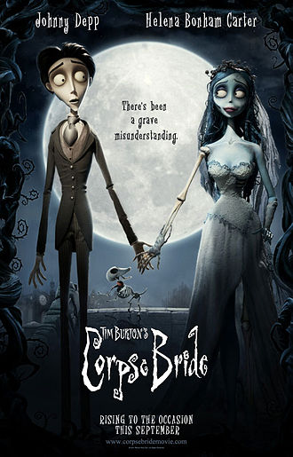
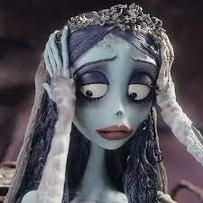
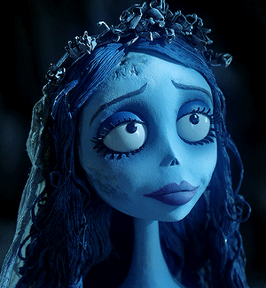

| İnsideOut | ÖlüGelin | Elemental | Zootopia | Arabalar |
ÖLÜ GELİN Ölü Gelin (Corpse Bride, 2005), Tim Burton'un Edward Scissorhands ve The Nightmare Before Christmas filmlerinde yaratmış olduğu gotik ve The Nightmare Before Christmas'ta olduğu gibi stop-motion animasyon tekniği ile çekmiştir.karanlık havaya sahiptir Yönetmen bu filmi de Victor Van Dort kısa süre sonra güzel Victoria ile evlenecektir. Ancak genç adam kendini henüz evlenmeye hazır biri gibi hissetmemektedir. Kendi kendine yüzük takma provası yaparken yüzüğü yanlışlıkla Ölü Gelin'in parmağına takıverir ve apar topar Ölüler Diyarı'na götürülür. Ölüler Diyarı'ndaki hayat Yaşayanların Dünyası'nın sıkıcılığından uzak ve çok daha eğlenceli bir yerdir. Yine de hiçbir şey Victor'un Victoria'ya kavuşmasına engel olamayacaktır ve öyle kalacaktır. Victor Victoria ile evlenmekten çok korkmaktadır. Fakat Victoria ile tanışınca evliliğin o kadar kötü olmadığını düşünmeye başlar. Victor ürkek bir karakter olmasına rağmen daha sonra kendine güven kazanmıştır. Ölü Gelin geçmişinde çok büyük acılar yaşamıştır. Öldükten sonra bile aşkını bekleyen Ölü Gelin Victor karşısına çıktığında onu beklediği aşkı yerine koymuştur. Victoria aynı Victor gibi aslında evlilikten korkmaktadır. Victoria Victor'u çok kısa bir sürede tanımış olmasına rağmen ona karşı güçlü hisler beslemektedir. |